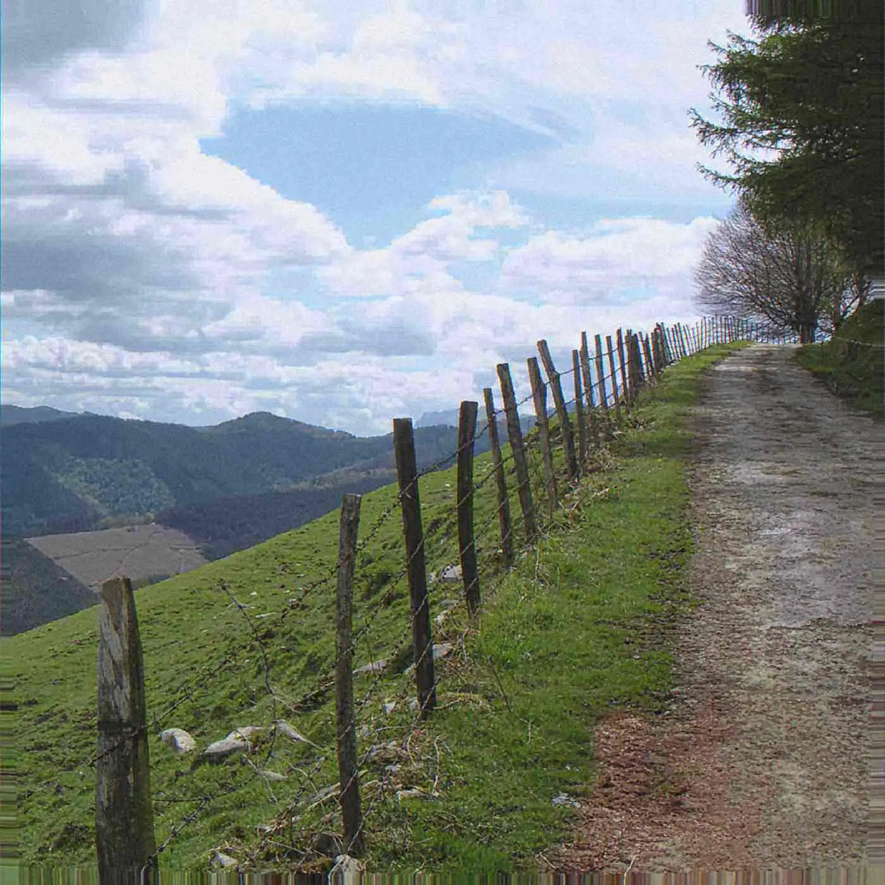

Essay
Initial D and the Sound of Speed
Initial D paired a mountain pass with eurobeat. The soundtrack outlived the joke and taught a tempo what devotion sounds like.
- format
- Essay
- date
- Jan 19, 2023
- author
- CJ Archer
- words
- 761 words · 3 min
- photo
- Photo: jazpillaga
Initial D began as a manga by Shuichi Shigeno in 1995: street racing on the mountain passes of Gunma, a tofu delivery kid, a white Toyota Sprinter Trueno AE86 that became more famous than most real race cars. The anime adaptation did something the manga could point at but not play. It scored the races with eurobeat, the Italian-produced, happy-hard dance music that had its own compilation empire in Japan under names like Super Eurobeat. Dave Rodgers and a bench of producers and singers became, for a global audience of teenagers, the sound of a cartoon car taking a corner. The music was not famous and then applied. The application made it famous.
Eurobeat, for a listener who has only met it as a meme, is a specific lineage. Italo disco in the 1980s; a faster, brighter, relentlessly major-key descendant that Japanese labels ordered in bulk from Italian studios; a functional music for parasailing compilations and then, by accident of taste, for racing animation. It is sincere on purpose. The vocals believe the metaphor. The kick believes the chorus. Irony, which was the dominant dialect of a lot of 2000s online taste, does not know what to do with a singer who means “running in the 90s” as a life philosophy. Initial D’s fans did know. They drove the sincerity around the internet until the sincerity came back around, years later, as a joke that still slapped, which is the usual life cycle of a dance record that was never kidding.
The AE86 and the CRT monitor are the material culture around the sound. A cheap car with the right weight balance; a television that glowed; a download or a DVD or a file traded like a tape. You can describe this as nostalgia and be correct about the demographic and wrong about the music. The music’s function inside the show is acceleration. A corner arrives, a track drops, the editing matches a build. That is dance-floor logic applied to animation: the drop as a narrative event. Kids who learned melody from those sequences were learning what producers already knew, that a shameless hook is a tool, not a failure of taste. The underground’s periodic embarrassment about joy — the suspicion that if people are grinning the music must be lesser — is the thing Initial D never had time for. The pass was too narrow. The hook had to work.
There is a local version of this feeling anywhere there is a wet road and a car and a track that is happier than the driver’s self-image. This magazine’s city happens to have wet roads. The essay does not need to pretend a Cumberland night is Mount Akina. It needs to notice that devotion travels. Fans who have never been to Gunma can still hear, in those productions, a commitment to melody that artier dance music keeps misplacing and then mourning. When a room feels like a meeting, it is often because everyone has agreed that wanting the chorus is naïve. Eurobeat is naïve. It is also engineered with complete professional seriousness by people who were writing hits to order. Naïveté, in the vocal, plus craft, in the kick, is a combination pop understands and experimental scenes talk themselves out of.
The meme era did the soundtrack a predictable injustice and a smaller justice. The injustice was reducing a long-running series and a deep catalogue to a single looped joke. The justice was that the joke still had the drums in it. People who came for the irony stayed for the build, or they left, and either result is a kind of criticism. A track that survives being a meme has a body. Rodgers’ productions, and the productions around them, have bodies: tempo, chorus, a singer, a key change you can see coming and want anyway. Compare the way sample-based melancholy ages, by being respected. Compare the way this music ages, by being used. Use is a respectable fate for dance music. It was made to be used.
So the archive note is not “remember this cartoon.” It is that a tofu-delivery story and an export-market dance genre locked together tightly enough to rewire a generation’s idea of speed, and that the lock was melodic. Initial D did not ask permission to be cool. It asked a simpler question, the one dance music is always asking: when the corner comes, is the track already in gear? On those episodes, it was. Devotion moved the car. The rest of us can keep the lesson and leave the mountain where it is.